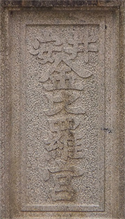

- 第38代天智天皇(てんちてんのう)の御代(668～671年)に藤原鎌足(ふじわらのかまたり)が一堂を創建し、紫色の藤を植え藤寺と号して、家門の隆昌と子孫の長久を祈ったことに始まります。
- 第75代崇徳天皇(すとくてんのう) (在位1123～1141年)は特にこの藤を好まれ、久安2年(1146年)に堂塔を修造して、寵妃である阿波内侍(あわのないし)を住まわされました。
- 崇徳上皇が保元の乱(1156年)に敗れて讃岐（現、香川県）で崩御された時に、阿波内侍は上皇より賜った自筆の御尊影を寺中の観音堂にお祀りされました。
- 治承元年(1177年)、大円法師(だいえんほうし)が御堂にお籠りされた時に、崇徳上皇がお姿を現わされ往時の盛況をお示しになられました。このことは直ちに後白河法皇(ごしらかわほうおう)に奏上され、法皇のご命令により建立された光明院観勝寺が当宮の起こりといわれています。
- 光明院観勝寺は応仁の乱(1467～1477年)の兵火により荒廃しましたが、元禄8年(1695年)に太秦安井（京都市右京区）にあった蓮華光院が当地に移建され、その鎮守として崇徳天皇に加えて、讃岐の金刀比羅宮より勧請した大物主神と、源頼政公を祀ったことから「安井の金比羅さん」の名で知られるようになりました
- 明治維新の後、蓮華光院を廃して「安井神社」と改称し、更に「安井金比羅宮」と改め現在に至っています。
あらゆる悪い縁を切り、
良縁を結ぶ
- 主祭神の崇徳天皇は、讃岐の金刀比羅宮で一切の欲を断ち切って参籠（おこもり）されたことから、当宮は古来より断ち物の祈願所として信仰されてきました。
- また、戦によって心ならずも寵妃阿波内侍とお別れにならざるを得なかった崇徳上皇は、人々が御自身のような悲しい境遇にあわぬよう、幸せな男女のえにしを妨げる全ての悪縁を絶切って下さいます。男女の縁はもちろん、病気、酒、煙草、賭事など、全ての悪縁を切っていただいて、良縁に結ばれて下さい。
- 良縁に結ばれたご夫婦やカップルがお参りされても縁が切れることはありません。更にお二人がより深くより強く結ばれる御利益をいただけますのでご安心を。
海上安全
- 崇徳天皇とご一緒にお祀りしています大物主神は、古くから道開きの神様として信仰されています。
- 特に讃岐（香川県）の金刀比羅宮は海上交通の守り神とされてきました。当宮は京都市内唯一の金比羅さんとして、釣り人やマリンスポーツを楽しまれる方の信仰を集めています。
交通安全
- 海上安全と同じく、大物主神のお力によるご利益です。
- 現代社会では、ご自分が原因でなくても、いつ事故に巻き込まれるか分かりません。自動車、バイク、鉄道、その他あらゆる交通に関わる災難からお守りいただく御神徳です